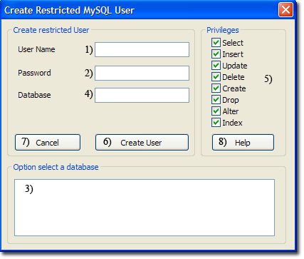
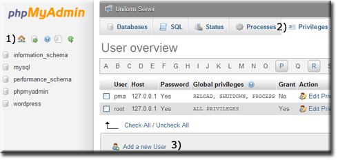
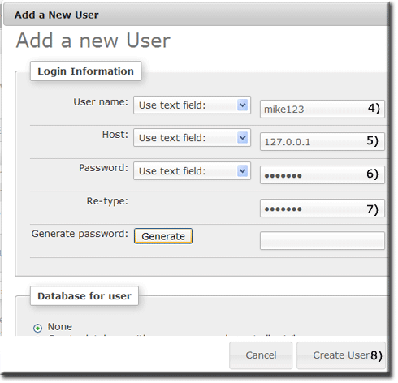
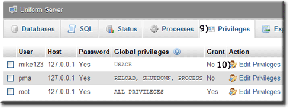
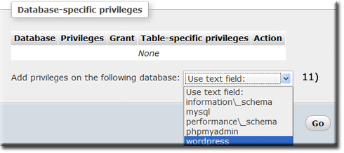
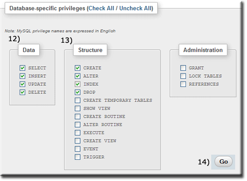

|
|
MySQL Create Restricted User |
MySQL privileges allow each of the users to access and utilize only the areas they need to perform their tasks. This prevents a user from accidentally accessing an area where he or she should not have access, adding to the security of the MySQL server.
When you connect to a MySQL server, the host from which you connect and the username you specify determines your identity. With this information, the server then grants privileges based upon this identity. This page focuses on creating a user with restricted privileges.
There are three methods for creating a restricted user; you can use UniController, phpMyAdmin or MySQL Console. UniController provides a convenient menu option described below. To use this option, ensure the MySQL server is running; otherwise, the button remains greyed out.
Create Restricted MySQL User using UniController
MySQL > Create restricted MySQL User
Note 2: You can manually enter a database (4) even if it does not exist. The database is assigned to the user, and it is assumed you will create this database later. |
 |
Create Restricted MySQL User using phpMyAdmin
Start Controller and start both servers, then click phpMyAmin button. To create a restricted user, proceed as follows:
Note: The following assumes the user to create is mike123 and the password is pass123. The database wordpress that the user will be assigned to must have already been created.
Open Add new user page
|
When first started, the phpMyAdmin home page is displayed; you can always return to this page by clicking the Home icon (1).
|
 |
Create new user
|
Creating a new user requires only the login information; the other fields are not required. We will assign this user to a database and set appropriate privileges as a second step. From Add user account page:
|
 |
Assign user to a database
The new user created has now been added to the User accounts overview page. This new entry allows a user to be assigned to a database as follows:
|
After creating a new user, you will be at the Edit privileges: User account page.
|
 | |
|
A new page opens, displaying privileges.
|
 |
|
|
This directs you to the Database-specific privileges section.
|
 |
Create Restricted MySQL User using MySQL Console
Creating a user with restricted privileges and assigning that user to an existing database can also be performed using a single SQL line.
Example user
User name to create: fred123
User password: fredpass
Existing database: wordpress
Open MySQL Console: click MySQL Console button.
Use the MySQL Client utility to create our example user with restricted privileges as follows:
The result is shown below: Welcome to the MySQL monitor. Commands end with ; or \g. Your MySQL connection id is 8 Server version: x.x.x MySQL Community Server - GPL Copyright (c) (...), Oracle and/or its affiliates. Oracle is a registered trademark of Oracle Corporation and/or its affiliates. Other names may be trademarks of their respective owners. Type 'help;' or '\h' for help. Type '\c' to clear the current input statement. mysql> GRANT SELECT, INSERT, UPDATE, DELETE ON wordpress.* TO 'fred123'@'127.0.0.1' IDENTIFIED BY 'fredpass'; Query OK, 0 rows affected (0.02 sec) mysql> exit Bye C:\UniServerZ\core\mysql\bin> |
Note: If you have changed the MySQL root password, remember to substitute root (-proot) with your password in the above.
Delete Restricted MySQL User using MySQL Console
Delete a user (example: fred123) with restricted privileges as follows:
Open MySQL Console: click MySQL Console button.
Use the MySQL Client utility to delete our example user fred123:
|
Enter the following in a command window:
The result is shown below: Welcome to the MySQL monitor. Commands end with ; or \g. Your MySQL connection id is 8 Server version: x.x.x MySQL Community Server - GPL Copyright (c) (...), Oracle and/or its affiliates. Oracle is a registered trademark of Oracle Corporation and/or its affiliates. Other names may be trademarks of their respective owners. Type 'help;' or '\h' for help. Type '\c' to clear the current input statement. mysql> DROP USER 'fred123'@'127.0.0.1'; Query OK, 0 rows affected (0.01 sec) mysql> exit Bye C:\UniServerZ\core\mysql\bin> |
Related topics
MySQL Console
How to run a standard Server Console command window
MySQL Console command window short cut